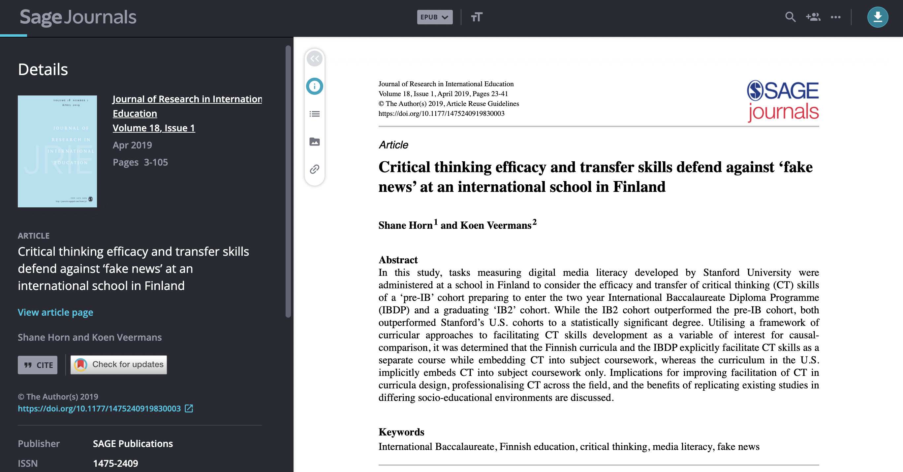

Hi, I'm Yueqi Wang, a master's student at UQ in the third semester of the IT program. I am passionate about web design and programming. I enjoy creating user-friendly and visually appealing websites. Looking forward to exploring more in the world of technology and design.
ABOUT THE PROJECT
This portfolio includes my contributions and reflections on the course DECO7180. This course required students to keep a work journal to generate a portfolio and collaboratively create an interactive website using APIs to explore government open data. My team conceptualized a website aimed at students studying journalism and related disciplines, designed to cultivate and enhance their critical thinking. Our website (Figure1), serving as a learning and discussion platform, integrated the ABC Local Online Photo Stories database, Google Maps, and AI technology to enhance users' critical thinking skills through "discerning authenticity" and "sharing perspectives".
Feel free to contact me if you have any questions.
Figure1. The homepage of final product
INSPIRATION
The process began with idea generation. Through studio-organized group discussions and database exploration, my concept evolved. Initially, I aimed to develop a website benefiting locals, utilizing an intriguing 'Brisbane events' dataset. This led to a preliminary webpage framework centered on interactive mapping of event locations (see Figures 2 and 3).
However, there was an analogous feature within the existing Brisbane City Council platform, also, it seemed that maps were the primary foundation of everyone's ideas in the studio’s discussion. Therefore, I decided to do something different. Through group discussions organized by the studio, I gained some inspiration - presenting raw data in an engaging way to anyone interested in a certain type of data but not proficient in data analysis.
Combining my initial idea with a database of monthly browsing data from the Brisbane City Council, I introduced a stamp-collecting approach to enhance data engagement. Users could collect stamps, each representing a specific data point, and visualize data based on their collection progress. Subsequently, I created the poster (Figure 4) and delivered a presentation in week3.
Figure2. The prototype of brisbane event
Figure3. The prototype of brisbane event
Figure4. The poster of design inspiration
Figure5. The discussion process in studio
Reflection
The journey from generating the initial idea to demonstrating the week 3 concept showcased my ability to assess and adapt as needed to ensure the project's distinctiveness and relevance. Recognizing the need for a unique approach, I actively engaged in group discussions organized by the studio, which provided fresh perspectives. This experience emphasized the importance of being flexible and open to change when confronted with new information. It underscored the need to consistently evaluate how a project concept fits into the broader landscape of existing solutions. Moreover, the collaborative aspect of the studio discussions played a pivotal role in shaping the ultimate direction of the project.
However, in the pursuit of continuous iteration within a constrained timeframe, I recognized that I may have underestimated the need for thorough research and in-depth analysis of this concept. This insight provides a valuable reminder about the essential balance between creativity, innovation, and the rigorous examination of ideas, especially in the initial stages of concept development.
Looking ahead, I would place greater emphasis on conducting a comprehensive exploration of potential concepts, establishing a sturdy groundwork for critical analysis before settling on a particular direction. I plan to carry forward this approach of seeking inspiration through collaborative discussions and remaining receptive to refining and redefining initial concepts.
PROPOSAL
After concluding the design inspiration phase, we initiated the team collaboration project. Figure 6 illustrates the diversity within our team. Building upon the ideas generated in the inspiration phase, we engaged in thorough discussions. Eventually, we set our goal on making news more engaging and chose the ABC Local Online Photo Stories database for a series of interactions. The early stages of the project primarily involved cooperative efforts. Figures 7, 8, and 9 showcase our discussions on website interface, functionality, interaction flow, and persona. Once we outlined the general content for each section, we collectively created the presentation for the sixth week proposal. Two team members were responsible for sketching the user scenario and designing the overall framework of the presentation, while another team member and I worked on refining the persona and visualizing our ideas, as depicted in Figure 10. During this stage, I also attempted to establish basic interactions with the database using APIs as shown in Figure 11. This served as a foundational step for our subsequent coding endeavors. Subsequently, we delivered the proposal presentation in week 6. However, the outcome did not meet our expectations, as shown in Figure 12
Figure6. Team diversity
Figure7. The interaction features
Figure8. The persona and tasks
Figure9. The basic concept and user senario
Figure10. The visualization of proposal in Figma
Figure11. The code of accessing our database
Figure 12. The feedback of our proposal
Reflection
The start of the team collaboration project marked a significant shift from individual brainstorming to collective idea generation and decision-making. Our team's diverse composition brought forth a range of perspectives and strengths, which proved to be a valuable asset as we delved into discussions and focused on a specific project goal.
Despite our concerted efforts, the outcome of the proposal presentation in week 6 fell short of our expectations. This served as a valuable reminder of the iterative nature of project development and the necessity for adaptability in the face of challenges. The problem arose helped us keep iterating our concept and features. At this proposal, we didn't conduct thorough enough research to gauge whether our intended interactions would resonate with them. This oversight underscored the importance of user-centered design and the imperative for comprehensive user research in shaping our project's trajectory.
In future collaborations, I would prioritize a more thorough exploration of user needs and preferences, ensuring that our project closely aligns with their expectations. This experience reaffirmed the significance of adhering to user-centered design principles and the continuous gathering of feedback to refine our project's course.
MVP
After our initial team proposal, we identified several areas for improvement. Our tasks included creating the MVP presentation, designing interactions and pages, implementing code, conducting user interviews, user tests, and researching relevant literature. My responsibilities encompassed the majority of code implementation for the MVP, participated in design discussions, and contributed to a small portion of the literature review. After extensive reflection and discussions on the proposal feedback (Figure 13), consultations with our tutor (Figure 14), and user tests using low-fidelity (Figure15) and mid-fidelity prototype (Figure16), we recognized the challenge of making news engaging. Consequently, we shifted our project's focus towards enhancing users' critical thinking. Through a series of discussions and supported by relevant literature, we opted to prioritize authenticity verification and user discussions as the main functionalities of our MVP. Subsequently, I collaborated with the design team member to initiate implementation (Figure 17). Given the numerous areas for improvement in our proposal, I took on the majority of the MVP code implementation, encompassing all content in the eight files depicted in Figure 18. Additionally, I found two articles that supported our viewpoint (Figure 19, 20). Our MVP ultimately yielded a satisfactory outcome as shown in Figure 21.
Figure 13. The concept discussion of mvp
Figure 14. The concept discussion of mvp
Figure 15. The low-fidelity prototype
Figure 16. The mid-fidelity prototype
Figure 17. The design discussion of mvp
Figure 18. The implementation of mvp

Figure 19. The article about critical thinking
Figure 20. The article about critical thinking
Figure 21. The feedback of MVP
Reflection
At this point in the project, I've really come to realize how crucial it is to have clear roles and responsibilities. At the beginning, we all pitched in together and worked collaboratively. But as we moved forward, we noticed that our Minimum Viable Product (MVP) had veered quite a bit from our initial plan. This meant a hefty workload for our team, underscoring the importance of splitting tasks effectively. We did a great job of embracing this, with each of us taking on specific roles. We covered everything from doing research and creating presentations to design work and coding. This division allowed us to tackle different aspects of the project efficiently, resulting in a pretty comprehensive MVP.
Regarding the two articles I found, the first article in Figure 17 investigates the effectiveness of critical thinking skills and their application in discerning and combating misinformation, commonly referred to as 'fake news', within an international school setting in Finland (Horn & Veermans, 2019). The study employs a well-designed mixed-methods approach, providing comprehensive insights into critical thinking's role in countering fake news. Clear research objectives and hypotheses enhance the study's rigor. However, a larger and more diverse sample size can be used to enhance the study's robustness. Exploring the transferability of results to different educational and cultural contexts can also be considered.
The second paper as shown in Figure 18 explores the influence of critical thinking dispositions and new media literacy on the ability to discern and combat fake news on social media platforms (Orhan, 2023). The paper constructs a comprehensive research model adds depth to the study's findings. The study employs empirical data and statistical techniques to analyze the relationships between the key variables. This approach enhances the study's credibility. However, a broader representation of university students with varying backgrounds can provide a more nuanced perspective. A detailed discussion of how critical thinking dispositions were measured would be valuable. Incorporating a longitudinal approach to assess the development of critical thinking and new media literacy skills among university students over time would provide insights into the long-term impact of education.
In order to better understand our target audience - journalism students, we conducted a series of user interviews. Interestingly, the feedback mirrored the findings from Horn and Veermans (2019), who emphasized that for students in this field, the quality and content of news, along with the potential to foster critical thinking, were of paramount importance.
The low-fidelity prototype served as a rudimentary embodiment of our discussed ideas. However, it just provides a basic flow, users found it challenging to grasp our concept and understand how our authenticity verification would be implemented.
The feedback from mid-fidelity prototype: Firstly, the current page design style did not meet the expectations of our target user group. Additionally, the layout and typography still presented issues, with some key content not being prominently displayed, which could potentially lead to user misunderstanding. The discussion board lacked appeal for user interaction, and the current authenticity verification was still somewhat unclear, leaving users puzzled about the website's primary goal of cultivating their critical thinking.
Furthermore, through discussions, we adjust the technical implementation of authenticity verification from initially relying on AI-generated images to utilizing mix columns in the database. This not only strengthened interaction with the database but also reduced the technical complexity.
The study by Orhan (2023) on the influence of critical thinking dispositions and new media literacy on discerning and combating fake news on social media platforms provided robust support for our concept. The comprehensive research model and empirical data analysis in this paper resonated with our own approach in developing and refining our authenticity verification process.
While the two articles weren't included in the final report, they provided robust support for our concept and deepened my understanding of the critical role that authenticity verification plays in combating misinformation. Their findings reinforced the importance of fostering critical thinking skills in discerning and countering fake news, a principle that underpins the core functionality of our website.
FINAL PROJECT
After completing the MVP, we further refined and improved it based on feedback and user tests in preparation for the tradeshow. We also began writing our final report, which is divided into four main sections: final product, implementation, discussion of process, and reflection. My main responsibilities included: Firstly, updating news categorization and flow: In the MVP, we primarily provided a specific news article as a simulation. Each button in Figure 22 led to the same content. Therefore, I needed to modify the logic to categorize different types of news, allowing users to select their preferred news based on categories. Secondly, enhancing discussion logic: Based on user test feedback, I altered the composition of the discussion board. I incorporated animations to provide users with a more immersive experience, as shown in Figures 23. Thirdly, writing code for the Rank page and implementing the slideshow, as seen in Figure 24. Fourthly, for the tradeshow, I prepared a flowchart of all the web pages for presentation, as depicted in Figure 25. Lastly, in terms of the report, I was responsible for writing the implementation section, excluding the third-party framework part. Part of my main code implementation was illustrated in Figure 26, 27. Overall, we successfully implemented all planned functionalities and showcased them at the tradeshow, marking a fulfilling conclusion to this project (Figure 28).
Figure 22. Topic filter
Figure 23. The discussion board
Figure 24. The rank page
Figure 25. The interaction flow
Figure 26. Part of the PHP code
Figure 27. Part of the JavaScript code
Figure 28. The tradeshow
Reflection
Despite our MVP looked good, it did face a few challenges that needed addressing. One major thing was making sure the main idea of "improving user critical thinking" was crystal clear in the website's design. For people who weren't familiar with our concept, it was a bit tricky to grasp it just from the MVP and high-detail prototypes. Plus, some design elements, while nice to look at, actually made it harder to read the content. We had to make some adjustments to guarantee a smooth reading experience for users. Lastly, although the website aimed to help users hone their critical thinking skills, it was missing a way to give feedback and track a user's progress in this area. That could potentially affect how engaged users are with the platform in the long run.
These reflections really underscore how important it is to communicate a project's main idea clearly and to design with the user in mind. In future projects, I'd make sure that no matter how familiar someone is with the concept, they can easily understand it. I'd also pay more attention to finding that sweet spot between making things look good and making sure they're easy to read. Finally, I'd consider adding mechanisms for feedback to help users track and improve their progress, creating a more meaningful and lasting engagement with the platform.
Overall, our final product can be considered a success since it met all the expected functionalities. This includes the main features of "detecting authenticity" and "sharing perspectives," as well as extras like trending searches, user profiles, and in-depth browsing data summaries and analyses. The website offers a well-structured flow that guides users through the webpage exploration.
However, there are areas where we could make improvements. Because we didn't have enough real user data, we had to simulate certain functions. In the future, having a user database to record relevant information would allow for more accurate data feedback and interaction.
Furthermore, one area where our product could be better is in its compatibility with different webpage sizes. This is something we can work on in future iterations.
In summary, while our final product is a significant achievement, there are clear opportunities for fine-tuning and expansion. These insights provide valuable guidance for potential future developments, making sure the product keeps evolving to meet user needs and expectations.
PORTFOLIO
This personal portfolio was created using HTML, CSS, and JavaScript technologies, with minimal utilization of the Bootstrap framework for page optimization, photoshop to matting image and Figma to do the prototype. To provide users with an immersive experience, I incorporated scenic images as backgrounds. The overlay effect of text and background enhances user interaction.
I initially sketched out my ideas, as shown in Figure 29. Subsequently, I utilized Figma to create a high-fidelity representation, as seen in Figure 30. The webpage content is based on my weekly journal (Figure 31), which documents the progress of the entire course, along with my personal contributions and reflections. However, when I tried to incorporate the textual content into the pages, I found the space to be insufficient. As a solution, I added transitional pages between each section to expand the content space, as illustrated in Figure 32.
Figure 29. The low-fidelity prototype
Figure 30. The high-fidelity prototype
Figure 31. The weekly journal
Figure 32. The final high-fidelity prototype
Reflection
I encountered a challenge during the process of creating my portfolio. I initially worked on the layout of the portfolio page and then added the relevant content. However, after adding the content, I realized that there was an excessive amount of text, which made it hard to maintain my original style. This led me to unexpected design adjustments in a second round.
Another aspect that could use improvement is incorporating user testing. Without user feedback, it's tough to ensure that the interactions I've designed are intuitive and effective.
As I look ahead, there are several areas I plan to enhance in my portfolio. Firstly, I want to make it more mobile-friendly to ensure a smooth experience for users on different devices. Additionally, I'll focus on improving accessibility to make the portfolio usable for a wider audience.
COURSE REFLECTION
Reflecting on my initial goals for this course, I can confidently say that it has been successful in helping me improve my web development skills and enhance my teamwork and collaboration abilities.
Through the implementation of project functionalities, I had the opportunity to work with API for the first time, allowing me to dynamically retrieve data. Exploring news topic categorization deepened my understanding and application of PHP code. Features like writing slideshows, interactive discussion boards, and page flow design familiarized me with JavaScript. Implementing the entire main functionality flow gave me firsthand experience in the seamless collaboration between JavaScript and PHP, enriching my technical skills and knowledge.
In terms of teamwork and collaboration, the initial concept and functionality discussions ensured that every team member had a clear understanding of the big picture, enabling us to excel in our respective roles. The well-defined division of labor allowed us to contribute to the project in our areas of expertise. Strong team collaboration facilitated a smooth project progression, resulting in a successful final product.
However, in terms of design, I feel that I didn't make significant progress as my primary role within the team was development. While I did contribute to some design decisions, I didn't have as many opportunities to expand my design knowledge.
Additionally, the process of creating this project led me into a domain I had no prior experience with: news. Conducting literature research in this area deepened my understanding of news and critical thinking.
In conclusion, this course provided me with a highly enjoyable team collaboration experience. I want to express my gratitude to every member of my team and the instructional team!
Horn, S., & Veermans, K. (2019). Critical thinking efficacy and transfer skills defend against ‘fake news’ at an international school in Finland. Journal of Research in
International Education, 18(1), 23–41. https://doi.org/10.1177/1475240919830003/
Orhan, A. (2023). Fake news detection on social media: the predictive role of university students’ critical thinking dispositions and new media literacy. Smart
Learning Environments, 10(1). https://doi.org/10.1186/s40561-023-00248-8
Pixabay. (2017a, April 23). Blue Sky Video Free stock video footage, Royalty-Free 4K & HD video clip [Video]. Pexels. https://www.pexels.com/video/855005/